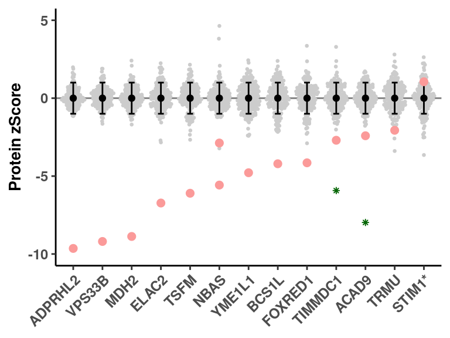

# load functions
source(snakemake@input$config)
dev.off()
## null device
## 1
##########################################################
# Read integrated omics file
# rp <- readRDS("/s/project/mitoMultiOmics/multiOMICs_integration/processed_data/integration/patient_omics.RDS") %>% as.data.table()
rp <- readRDS(snakemake@input$patient_omics) %>% as.data.table()
# Load sample annotation
# sa <- fread('/s/project/mitoMultiOmics/multiOMICs_integration/raw_data/proteomics_annotation.tsv')
sa <- fread(snakemake@input$sample_annotation)
sa <- sa[USE_FOR_PROTEOMICS_PAPER == T]
sa$sample_gene <- paste0(sa$SAMPLE_ID, "_", sa$KNOWN_MUTATION)
sa <- sa[order(CATEGORY, KNOWN_MUTATION)]
sax <- sa
# Subset cases with known pathogenic variants (I)
sa <- sa[CATEGORY %in% c( "I") ]
sa <- sa[ !(KNOWN_MUTATION %in% c("GNAO1", "UQCRFS1", "SSBP1"))] #remove ND, and not validated
sa$sample_gene <- paste0(sa$SAMPLE_ID, "_", sa$KNOWN_MUTATION)
# Subset data for causal genes in all samples
rp <- rp[ geneID %in% sa$KNOWN_MUTATION]
rp <- rp[!duplicated(rp)]
rp$sample_gene <- paste0(rp$SAMPLE_ID, "_", rp$geneID)
# Re-annotate causal gene
rp$causal_gene <- NULL
rp[, causal_gene := sample_gene %in% sa$sample_gene]
# Some genes reappear in discovery cohort
rp[, another_cohort := sample_gene %in% sax[CATEGORY %in% c("IIa", "III") ]$sample_gene ]
# Stim1 is upregulated, significant outlier in LIMMA
rp[geneID == "STIM1", geneID := "STIM1*"]
rp[causal_gene == T & is.na(PROTEIN_ZSCORE), PROTEIN_ZSCORE := -Inf]
rp[causal_gene == T & is.na(RNA_ZSCORE), RNA_ZSCORE := -Inf]
# Sort by causal gene Z score
rp_c <- rp[causal_gene == T ]
rp$geneID <- factor(rp$geneID, unique(rp_c[ order(PROTEIN_ZSCORE)]$geneID))
#####################################################################
fig <- ggplot(rp, aes(geneID, PROTEIN_ZSCORE ))+
geom_hline(yintercept = 0, color = "grey50") +
geom_quasirandom(data = rp[causal_gene != T ] , aes(geneID, PROTEIN_ZSCORE),color = "grey80" , size=0.5) +
stat_summary(fun.data = mean_sdl, fun.args = list(mult=1), geom="errorbar", color="black", width=0.2) +
stat_summary(fun = mean, geom="point", color="black") +
ylab("Protein zScore") +
scale_y_continuous(limits = c( -10, 5 ))+
geom_point( data = rp[causal_gene == T ], aes(geneID, PROTEIN_ZSCORE), colour = "#FB9A99" , size = 2) +
geom_point( data = rp[another_cohort == T ], aes(geneID, PROTEIN_ZSCORE ), size = 1, colour = "darkgreen", shape = 8)+
theme_classic()+
theme( legend.title = element_blank(),
axis.title.x = element_blank(),
plot.title = element_text(face="bold", size=14, hjust = 0.5),
axis.title.y = element_text(face="bold", size=10),
axis.text.x = element_text(face="bold", size=9, angle = 45, hjust = 1),
axis.text.y = element_text(face="bold", size=9),
legend.position = "none")
fig

pdf(snakemake@output$fig, # "/s/project/mitoMultiOmics/multiOMICs_integration/Figures/Fig1_c.pdf",
width = 4, height = 3, useDingbats=FALSE )
print(fig)
dev.off()
## png
## 2
IyctLS0KIycgdGl0bGU6IEZpZ3VyZSAxYyBDYXNlcyB3aXRoIHB1Ymxpc2hlZCBwYXRob2dlbmljIHZhcmlhbnRzCiMnIGF1dGhvcjogc21pcm5vdmQKIycgd2I6CiMnICBpbnB1dDoKIycgIC0gY29uZmlnOiAnc3JjL2NvbmZpZy5SJwojJyAgLSBwYXRpZW50X29taWNzOiAnYHNtIGNvbmZpZ1siUFJPQ19EQVRBIl0gKyAiL2ludGVncmF0aW9uL3BhdGllbnRfb21pY3MuUkRTImAnCiMnICAtIHNhbXBsZV9hbm5vdGF0aW9uOiAnYHNtIGNvbmZpZ1siQU5OT1RBVElPTiJdYCcKIycgIG91dHB1dDoKIycgIC0gZmlnOiAnYHNtIGNvbmZpZ1siRklHVVJFX0RJUiJdICsgIi9GaWcxX2MucGRmImAnCiMnIG91dHB1dDogCiMnICAgaHRtbF9kb2N1bWVudDoKIycgICAgY29kZV9mb2xkaW5nOiBoaWRlCiMnICAgIGNvZGVfZG93bmxvYWQ6IFRSVUUKIyctLS0KCgojIGxvYWQgZnVuY3Rpb25zCnNvdXJjZShzbmFrZW1ha2VAaW5wdXQkY29uZmlnKQoKZGV2Lm9mZigpCgoKIyMjIyMjIyMjIyMjIyMjIyMjIyMjIyMjIyMjIyMjIyMjIyMjIyMjIyMjIyMjIyMjIyMjIyMjIyMjIwojIFJlYWQgaW50ZWdyYXRlZCBvbWljcyBmaWxlIAojIHJwIDwtIHJlYWRSRFMoIi9zL3Byb2plY3QvbWl0b011bHRpT21pY3MvbXVsdGlPTUlDc19pbnRlZ3JhdGlvbi9wcm9jZXNzZWRfZGF0YS9pbnRlZ3JhdGlvbi9wYXRpZW50X29taWNzLlJEUyIpICU+JSBhcy5kYXRhLnRhYmxlKCkKcnAgPC0gcmVhZFJEUyhzbmFrZW1ha2VAaW5wdXQkcGF0aWVudF9vbWljcykgJT4lIGFzLmRhdGEudGFibGUoKQoKCiMgTG9hZCBzYW1wbGUgYW5ub3RhdGlvbgojIHNhIDwtIGZyZWFkKCcvcy9wcm9qZWN0L21pdG9NdWx0aU9taWNzL211bHRpT01JQ3NfaW50ZWdyYXRpb24vcmF3X2RhdGEvcHJvdGVvbWljc19hbm5vdGF0aW9uLnRzdicpCnNhIDwtIGZyZWFkKHNuYWtlbWFrZUBpbnB1dCRzYW1wbGVfYW5ub3RhdGlvbikKc2EgPC0gc2FbVVNFX0ZPUl9QUk9URU9NSUNTX1BBUEVSID09IFRdCnNhJHNhbXBsZV9nZW5lIDwtIHBhc3RlMChzYSRTQU1QTEVfSUQsICJfIiwgc2EkS05PV05fTVVUQVRJT04pCnNhIDwtIHNhW29yZGVyKENBVEVHT1JZLCBLTk9XTl9NVVRBVElPTildIApzYXggPC0gc2EKCgojIFN1YnNldCBjYXNlcyB3aXRoIGtub3duIHBhdGhvZ2VuaWMgdmFyaWFudHMgKEkpIApzYSA8LSBzYVtDQVRFR09SWSAlaW4lIGMoICJJIikgXQpzYSA8LSBzYVsgIShLTk9XTl9NVVRBVElPTiAgJWluJSBjKCJHTkFPMSIsICJVUUNSRlMxIiwgIlNTQlAxIikpXSAjcmVtb3ZlIE5ELCBhbmQgbm90IHZhbGlkYXRlZApzYSRzYW1wbGVfZ2VuZSA8LSBwYXN0ZTAoc2EkU0FNUExFX0lELCAiXyIsIHNhJEtOT1dOX01VVEFUSU9OKQoKCiMgU3Vic2V0IGRhdGEgZm9yIGNhdXNhbCBnZW5lcyBpbiBhbGwgc2FtcGxlcwpycCA8LSBycFsgZ2VuZUlEICVpbiUgc2EkS05PV05fTVVUQVRJT05dCnJwIDwtIHJwWyFkdXBsaWNhdGVkKHJwKV0KcnAkc2FtcGxlX2dlbmUgPC0gcGFzdGUwKHJwJFNBTVBMRV9JRCwgIl8iLCBycCRnZW5lSUQpCgoKIyBSZS1hbm5vdGF0ZSBjYXVzYWwgZ2VuZQpycCRjYXVzYWxfZ2VuZSA8LSBOVUxMCnJwWywgY2F1c2FsX2dlbmUgOj0gIHNhbXBsZV9nZW5lICVpbiUgc2Ekc2FtcGxlX2dlbmVdCgojIFNvbWUgZ2VuZXMgcmVhcHBlYXIgaW4gZGlzY292ZXJ5IGNvaG9ydCAKcnBbLCBhbm90aGVyX2NvaG9ydCA6PSBzYW1wbGVfZ2VuZSAlaW4lIHNheFtDQVRFR09SWSAlaW4lIGMoIklJYSIsICAiSUlJIikgXSRzYW1wbGVfZ2VuZSBdCgojIFN0aW0xIGlzIHVwcmVndWxhdGVkLCBzaWduaWZpY2FudCBvdXRsaWVyIGluIExJTU1BCnJwW2dlbmVJRCA9PSAiU1RJTTEiLCBnZW5lSUQgOj0gIlNUSU0xKiJdCnJwW2NhdXNhbF9nZW5lID09IFQgJiBpcy5uYShQUk9URUlOX1pTQ09SRSksIFBST1RFSU5fWlNDT1JFIDo9IC1JbmZdCnJwW2NhdXNhbF9nZW5lID09IFQgJiBpcy5uYShSTkFfWlNDT1JFKSwgUk5BX1pTQ09SRSA6PSAtSW5mXQoKIyBTb3J0IGJ5IGNhdXNhbCBnZW5lIFogc2NvcmUKcnBfYyA8LSBycFtjYXVzYWxfZ2VuZSA9PSBUIF0KcnAkZ2VuZUlEIDwtIGZhY3RvcihycCRnZW5lSUQsIHVuaXF1ZShycF9jWyBvcmRlcihQUk9URUlOX1pTQ09SRSldJGdlbmVJRCkpCgojIyMjIyMjIyMjIyMjIyMjIyMjIyMjIyMjIyMjIyMjIyMjIyMjIyMjIyMjIyMjIyMjIyMjIyMjIyMjIyMjIyMjIyMjIyMKCgojKyBmaWcud2lkdGg9NCwgZmlnLmhlaWdodD0zCmZpZyA8LSBnZ3Bsb3QocnAsIGFlcyhnZW5lSUQsICBQUk9URUlOX1pTQ09SRSApKSsKICBnZW9tX2hsaW5lKHlpbnRlcmNlcHQgPSAwLCBjb2xvciA9ICJncmV5NTAiKSArCiAgZ2VvbV9xdWFzaXJhbmRvbShkYXRhID0gcnBbY2F1c2FsX2dlbmUgIT0gVCBdICwgYWVzKGdlbmVJRCwgIFBST1RFSU5fWlNDT1JFKSxjb2xvciA9ICJncmV5ODAiICwgc2l6ZT0wLjUpICsKICBzdGF0X3N1bW1hcnkoZnVuLmRhdGEgPSBtZWFuX3NkbCwgZnVuLmFyZ3MgPSBsaXN0KG11bHQ9MSksIGdlb209ImVycm9yYmFyIiwgY29sb3I9ImJsYWNrIiwgd2lkdGg9MC4yKSArCiAgc3RhdF9zdW1tYXJ5KGZ1biA9IG1lYW4sIGdlb209InBvaW50IiwgY29sb3I9ImJsYWNrIikgKwogIHlsYWIoIlByb3RlaW4gelNjb3JlIikgKyAKICBzY2FsZV95X2NvbnRpbnVvdXMobGltaXRzID0gYyggLTEwLCAgNSApKSsgCiAgZ2VvbV9wb2ludCggZGF0YSA9IHJwW2NhdXNhbF9nZW5lID09IFQgXSwgYWVzKGdlbmVJRCwgIFBST1RFSU5fWlNDT1JFKSwgY29sb3VyID0gIiNGQjlBOTkiICwgc2l6ZSA9IDIpICsKICBnZW9tX3BvaW50KCBkYXRhID0gcnBbYW5vdGhlcl9jb2hvcnQgPT0gVCBdLCBhZXMoZ2VuZUlELCAgUFJPVEVJTl9aU0NPUkUgKSwgc2l6ZSA9IDEsIGNvbG91ciA9ICJkYXJrZ3JlZW4iLCBzaGFwZSA9IDgpKwogIHRoZW1lX2NsYXNzaWMoKSsKICB0aGVtZSggbGVnZW5kLnRpdGxlID0gZWxlbWVudF9ibGFuaygpLAogICAgICAgICBheGlzLnRpdGxlLnggPSBlbGVtZW50X2JsYW5rKCksCiAgICAgICAgIHBsb3QudGl0bGUgPSBlbGVtZW50X3RleHQoZmFjZT0iYm9sZCIsICBzaXplPTE0LCBoanVzdCA9IDAuNSksCiAgICAgICAgIGF4aXMudGl0bGUueSA9IGVsZW1lbnRfdGV4dChmYWNlPSJib2xkIiwgIHNpemU9MTApLAogICAgICAgICBheGlzLnRleHQueCA9IGVsZW1lbnRfdGV4dChmYWNlPSJib2xkIiwgIHNpemU9OSwgYW5nbGUgPSA0NSwgaGp1c3QgPSAxKSwKICAgICAgICAgYXhpcy50ZXh0LnkgPSBlbGVtZW50X3RleHQoZmFjZT0iYm9sZCIsICBzaXplPTkpLAogICAgICAgICBsZWdlbmQucG9zaXRpb24gPSAibm9uZSIpCmZpZwoKCnBkZihzbmFrZW1ha2VAb3V0cHV0JGZpZywgIyAiL3MvcHJvamVjdC9taXRvTXVsdGlPbWljcy9tdWx0aU9NSUNzX2ludGVncmF0aW9uL0ZpZ3VyZXMvRmlnMV9jLnBkZiIsICAKICAgIHdpZHRoID0gNCwgaGVpZ2h0ID0gMywgIHVzZURpbmdiYXRzPUZBTFNFICkKcHJpbnQoZmlnKSAKZGV2Lm9mZigpCgoKCgoKCgoKCg==